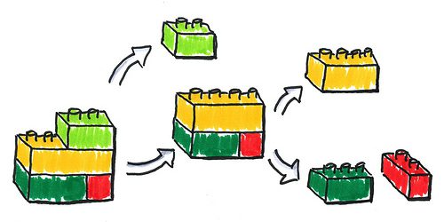
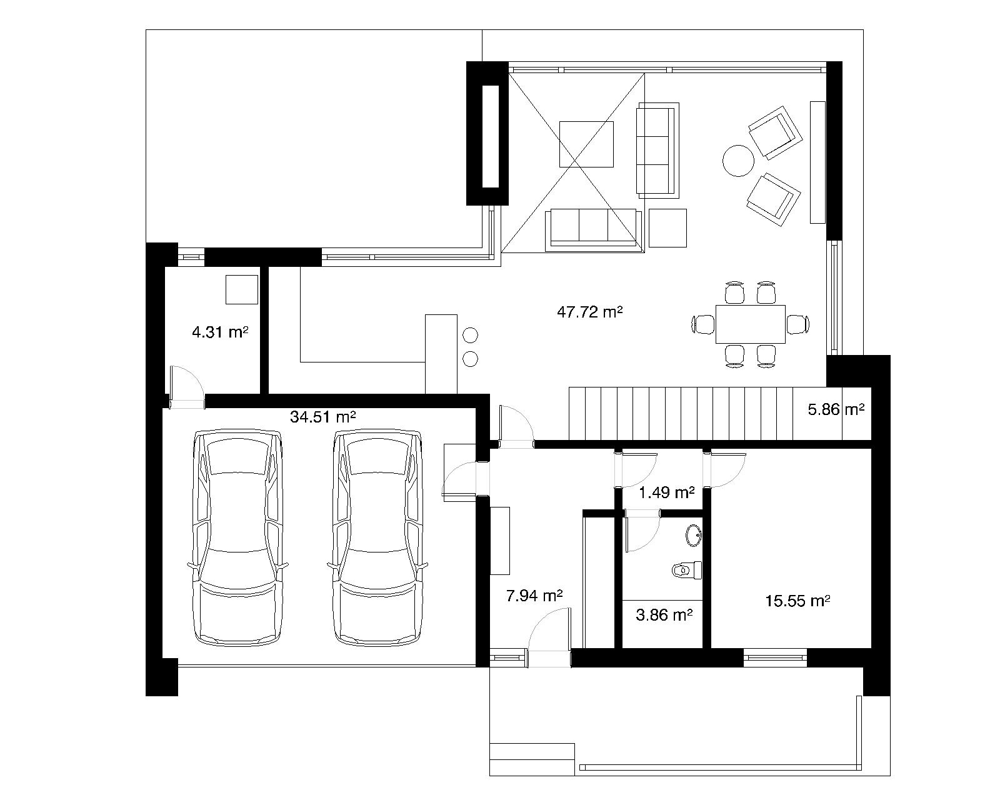
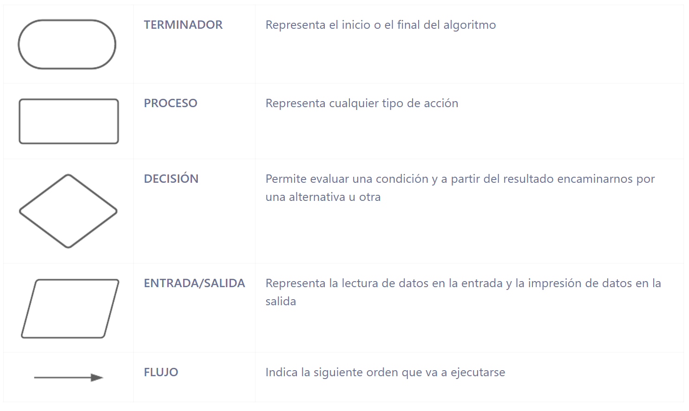
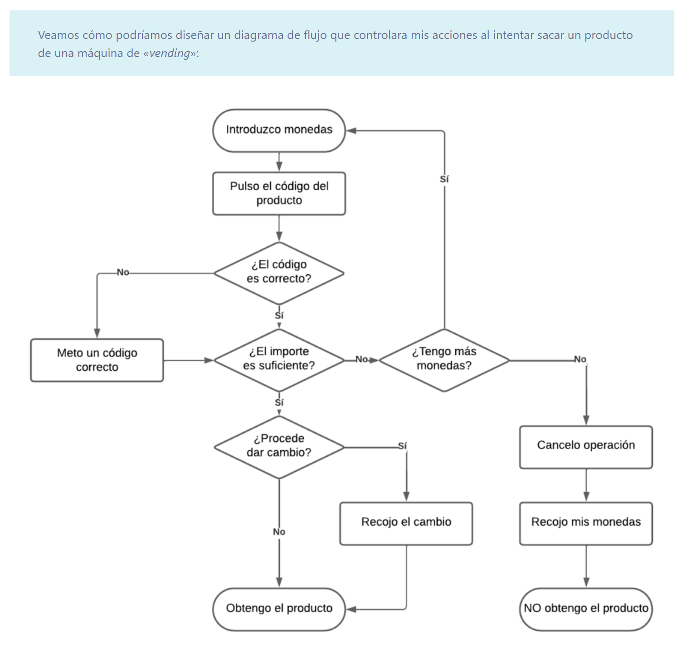
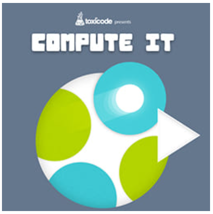
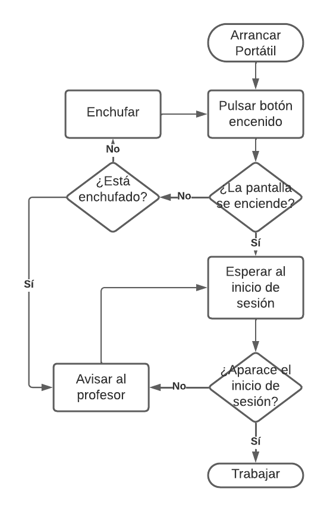

Fundamentos de programación¶
Fundamentos de programación¶
En la actualidad, la capacidad para entender la tecnología es una competencia fundamental que otorga a quienes la dominan una ventaja competitiva muy importante. El estudio de la programación, tiene una utilidad práctica indiscutible, pero es que a nivel profesional es ya una de las habilidades más demandadas por una amplia variedad de sectores.
El estudio de este tema no te va a convertir en programador, pero sí que te va a dar la foto global de porqué son necesarios los programas, y también del proceso que se sigue para su construcción. Además, aprenderás los fundamentos de uno de los lenguajes de programación más demandados en la actualidad, y serás capaz de programar todo un universo de aplicaciones, incluso juegos.
Lógica de programación¶
El estudio de los algoritmos es muy importante porque son la base del pensamiento computacional, una habilidad que es crítica en la actualidad.
Este tipo de pensamiento nos permite descomponer problemas complejos en partes más manejables, lo que es fundamental para cualquier tarea de programación. Aprender sobre algoritmos, adoptando la lógica de programación, mejora nuestra capacidad de pensar de forma ordenada, lo cual es indispensable en la resolución de problemas tanto en la informática como en la vida cotidiana.
Por lo tanto, estudiar cómo se construyen y optimizan los algoritmos va mucho más allá de programar, tiene que ver con la resolución de problemas en cualquier disciplina.
Cómo abordar problemas complejos¶
Vamos a ver algunas estrategias que podemos poner en práctica para facilitar la construcción de una solución.
-
Divide y vencerás
El enfoque «divide y vencerás» es una técnica ampliamente utilizada para abordar problemas complejos. Consiste en descomponer un problema grande en problemas más pequeños y manejables, resolver cada uno de estos subproblemas individualmente y luego combinar sus soluciones para resolver el problema original.

Divide y vencerás -
 Ejemplo construcción casa
Ejemplo construcción casa
Nadie empieza por el tejado sino que los pasos sencillos serían:
- Construcción de los cimientos.
- Levantar las paredes.
- Instalar electricidad y fontanería.
- Colocar puertas y ventanas
Cada uno de estas tareas se trabaja por separado y al completar todas las tareas obtenemos la casa.
-
Ejemplo desarrollo software que suma dos números
Primero lo dividimos en pequeñas tareas, por ejemplo:
- pedir datos al usuario
- realizar un cálculo
- mostrar un resultado
Resolver cada una por separado hace que el problema sea más fácil de entender y de programar.
-
-
Prototipado
El prototipado consiste en crear prototipos permite visualizar y evaluar rápidamente las soluciones propuestas, para posteriormente hacerle pruebas que aseguren que las soluciones funcionen correctamente.
-
Ejemplo construcción casa
Siguiendo con el ejemplo anterior, antes de construir una casa se hacen los planos. Estos planos no son la casa real, pero permiten:
- ver cómo será
- detectar errores
- hacer cambios sin gastar tiempo ni dinero

Planos de una casa -
Ejemplo desarrollo software que suma dos números
En programación, un prototipo puede ser:
- un esquema en papel
- un diagrama de flujo
- una primera versión muy sencilla del programa
Boceto de una aplicación De esta forma, pensamos la solución antes de programar, evitando errores y facilitando el trabajo posterior.
-
Algoritmos¶
Un algoritmo es un conjunto de instrucciones finita, concretas y ordenadas que describen un procedimiento paso a paso para realizar una tarea o resolver un problema.
Por tanto, una receta de cocina es un algoritmo. En el contexto de la programación, estos pasos son instrucciones que el ordenador ejecuta para alcanzar un resultado.
Los algoritmos son fundamentales porque permiten a los programadores escribir códigos que no solo resuelven problemas específicos, sino que también son eficientes y están optimizados para consumir la menor cantidad posible de recursos (tiempo, memoria, procesador, etc.).
Por ejemplo, si necesitamos un algoritmo para buscar un libro en una biblioteca, el proceso podría ser algo así:
- Inicio: entrar en la biblioteca.
- Búsqueda: dirigirse a la sección correcta según el género del libro.
- Selección: buscar el libro por su título en el orden alfabético.
- Verificación: si el libro está, cogerlo; si no está, buscar otro libro o preguntar al bibliotecario.
- Fin: salir de la biblioteca con el libro.
Cada uno de estos pasos constituye una parte del algoritmo y omitir cualquiera de ellos podría resultar en que no logremos nuestro objetivo -encontrar y llevarnos el libro-.
Además de la programación, usamos algoritmos en nuestra vida diaria, sin darnos cuenta: cuando organizamos nuestras tareas diarias, cuando decidimos la ruta más rápida para llegar a nuestro destino o incluso cuando hacemos la compra en el supermercado siguiendo un orden lógico que nos ahorre tiempo.
Formas de expresar un algoritmo¶
Los algoritmos pueden expresarse de muchas maneras, pero nos centraremos en dos de las más comunes: los diagramas de flujo y el pseudocódigo.
Diagramas de flujo¶
Los diagramas de flujo son representaciones gráficas de los pasos que forman parte de un proceso, usando símbolos interconectados por flechas. Estos diagramas facilitan la visualización de la secuencia de operaciones y son muy útiles para planificar y explicar algoritmos complejos.
- Componentes principales

-
¿Cómo se usa cada componente?
- El óvalo siempre se coloca en la parte superior del diagrama para indicar el inicio del proceso. El flujo comienza aquí.
- Los rectángulos se utilizan para representar cada acción secuencialmente. Cada paso que lleva a cabo el programa va dentro de un rectángulo.
- Cuando el proceso requiere una decisión o condición, usamos un rombo. La flecha que sale de uno de los lados indica lo que ocurre si la condición es verdadera (sí), y la otra lo que ocurre si es falsa (no).
- Los paralelogramos marcan los puntos donde el usuario debe introducir información (que necesita el programa para continuar) o donde el programa muestra un resultado al usuario.
- Las flechas dirigen el flujo de un paso al siguiente, indicando el orden y el camino a seguir en el proceso.
-
Restricciones en los diagramas de flujo
Para que los diagramas de flujo sean efectivos, es importante tener en cuenta algunas restricciones básicas:
- Claridad: los diagramas deben ser claros y fáciles de entender. Cada símbolo debe estar correctamente etiquetado y ser coherente con su función.
- Flujo único: solo debe haber una entrada y una salida de cada símbolo, salvo en el caso de los rombos (decisiones), donde puede haber dos salidas (una para “sí” y otra para “no”), pero no más de dos.
- Estructura lógica: el diagrama debe seguir una estructura lógica, evitando confusiones con flechas que se crucen o símbolos mal posicionados.
- Inicio y fin claros: siempre debe haber un símbolo de inicio y uno de fin. Sin estos dos elementos, el diagrama queda incompleto y es difícil de interpretar.
- Comprobación: una vez que tengas diseñado el diagrama, piensa en el funcionamiento del proceso completo y sigue cada uno de los caminos establecidos para asegurarte de que recoge todas las posibles situaciones que podrían darse.
- Bucles infinitos: se produce cuando el flujo de ejecución conduce a una repetición eterna. Debes diseñar el diagrama para que siempre acabe, evitando bucles infinitos.

-
Aplicaciones para diseñar diagramas de flujo
Para facilitar la creación de diagramas de flujo, existen muchas herramientas, pero yo te recomiendo estas:
- Draw.io: es una herramienta gratuita que se integra bien con Google Drive y ofrece amplias funcionalidades para diagramación.
- Lucidchart: permite crear diagramas de flujo complejos de manera sencilla y colaborativa. Todo completamente online y basado en el navegador.
Pseudocódigo¶
El pseudocódigo es una forma de expresar un algoritmo usando frases y estructuras que simulan código de programación pero en un lenguaje más accesible y menos rígido. No está pensado para ser ejecutado por una máquina, sino para ser entendido por humanos.
Inicio
Si está lloviendo entonces
Llevar paraguas
Sino
No llevar paraguas
Fin Si
Fin
Este método es especialmente útil para explicar lógicas complejas antes de codificarlas en un lenguaje de programación específico.
La utilidad de escribir nuestros algoritmos en pseudocódigo, es que no necesitamos conocer la sintaxis específica de un lenguaje de programación concreto, porque son tan expresivos que traducirlos a cualquier lenguaje de programación es muy rápido y sencillo.
De esta manera, especialistas de distintos lenguajes de programación, pueden discutir sobre el código de un programa escrito en un lenguaje común que entienden todos.
Pensamiento computacional¶
Llegados a este punto, tenemos todos los recursos necesarios para empezar a crear diagramas de flujo, pero todavía nuestro pensamiento computacional está un poco verde. Para entrenar un poco nuestra cabeza realizaremos el siguiente juego Compute IT:

Actividades¶
📝 AA4.5 Diagramas de flujo¶
(C.ESP1 / CE1.1 / IC1-3p)
Practica el diseño de diagramas de flujo expresando cada uno de estos algoritmos sencillos:
- Calcular el área de un triángulo
Solución

- Decidir qué ropa ponerse. Diseña un diagrama de flujo que ayude a decidir qué tipo de ropa ponerse en función de la temperatura. Considera tres rangos: menos de 15°C (ropa de invierno), entre 15°C y 25°C (ropa de entretiempo), y más de 25°C (ropa de verano).
- Elegir un medio de transporte. Crea un diagrama de flujo para elegir un medio de transporte para ir al trabajo. Si está lloviendo, elige el coche; si no, si la distancia es menor de 3 km, ir a pie; de lo contrario, usar bicicleta.
- Calcular el total a pagar en una tienda. Elabora un diagrama de flujo para calcular el total a pagar por un cliente en una tienda. El cliente ingresa la cantidad de productos y el precio por unidad. El total a pagar es simplemente la cantidad multiplicada por el precio por unidad.
- Verificar si un número es par o impar. Diseña un diagrama de flujo que determine si un número entero es par o impar.
- Freír un huevo. Crea un diagrama de flujo para el proceso de freír un huevo. Considera pasos como elegir una sartén, calentar aceite, romper el huevo, el tiempo de cocinado, etc.
Entrega: exporta cada uno de los diagramas en formato imagen , pégalos en un Writer y súbelos a Aules.
🔨 AAR4.6 Refuerzo: Diagramas de flujo¶
(C.ESP1 / CE1.1 / IC1-3p)
Practica el diseño de diagramas de flujo expresando cada uno de estos algoritmos sencillos:
- Conversión de grados Celsius a Fahrenheit. Este algoritmo pedirá al usuario una temperatura en grados Celsius, realizará la conversión a grados Fahrenheit usando la fórmula Fahrenheit = Celsius × 9/5 + 32 y mostrará el resultado en pantalla.
- Determinar si un número es par o impar. En este caso, el algoritmo solicita un número, lo divide entre dos y comprueba si el resto de la división entera es 0 o no. Dependiendo de este valor, se mostrará si el número es par o impar.
- Contador descendente. El algoritmo comienza pidiendo un número positivo al usuario, luego realiza un bucle que imprime los números desde ese valor hasta 0, decrementando en uno con cada iteración.
- Cálculo de la media de tres números. El usuario introduce tres números, el algoritmo suma esos números, calcula su media dividiendo la suma entre tres y muestra el resultado en pantalla.
Entrega: exporta cada uno de los diagramas en formato imagen , pégalos en un Writer y súbelos a Aules.